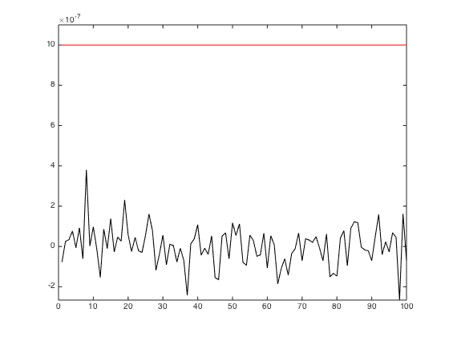

Contents
function varargout = v_skeleton(varargin) % % Skeleton script containing the minimally required code. Copy and add your ISETBIO validation code. % % [THE ONE LINE COMMENT ABOVE WILL GET AUTOPUBLISHED AS THE DESCRIPTION OF % THIS SCRIPT.] varargout = UnitTest.runValidationRun(@ValidationFunction, nargout, varargin); end
Function implementing the isetbio validation code
function ValidationFunction(runTimeParams)
Initialize ISETBIO
close all; ieInit;
Isetbio validation code goes here.
Some informative text
UnitTest.validationRecord('SIMPLE_MESSAGE', 'Skeleton script. Copy and adapt to your needs.');
Internal validations
Check whether quantity is within tolerance of zero
quantityOfInterest = randn(100,1)*0.0000001;
tolerance = 0.000001;
UnitTest.assertIsZero(quantityOfInterest,'Result',tolerance);
% If you want to do a more complicated comparison, you could write
% things out more fully along the lines of the commented out code
% here:
%
% if (max(abs(quantityOfInterest) > tolerance))
% message = sprintf('Result exceeds specified tolerance (%0.1g). !!!', tolerance);
% UnitTest.validationRecord('FAILED', message);
% else
% message = sprintf('Result is within the specified tolerance (%0.1g).', tolerance);
% UnitTest.validationRecord('PASSED', message);
% end
Simple assertion
fundamentalCheckPassed = true;
UnitTest.assert(fundamentalCheckPassed,'fundamental assertion');
% You can also do a customized assert that only prints on failure
% as in the commented out code below. This would also allow you to
% put a return after the check, to abort trying to go along further.
% This method produces a more agressive error message and should be
% reserved only for cases where something is very deeply wrong should
% the assertion fail.
% if (~fundamentalCheckPassed)
% UnitTest.validationRecord('FUNDAMENTAL_CHECK_FAILED', 'A fundamental check failed');
% end
Data for external validations
dataA = ones(10,20);
% Add validation data - these will be contrasted against the
% ground truth data with respect to a specified tolerance level
% and the result will determine whether the validation passes or fails.
UnitTest.validationData('variableNameForDataA', dataA);
Data to keep just because it would be nice to have
dataB = rand(10,30);
% Add extra data - these will be contrasted against their stored
% counterpants only when the verbosity level is set to 'med' or higher,
% and only when running in 'FULL' validation mode.
% The validation status does not depend on the status of these comparisons.
% This can be useful for storing variables that have a stochastic component.
UnitTest.extraData('variableNameForDataB', dataB);
Plotting
if (runTimeParams.generatePlots) figure(7); clf; plot(1:numel(quantityOfInterest ), quantityOfInterest , 'k-'); hold on; plot([1 numel(quantityOfInterest )], tolerance*[1 1], 'r-'); set(gca, 'YLim', [min(quantityOfInterest ) max([max(quantityOfInterest ) tolerance])*1.1]); drawnow; end
end